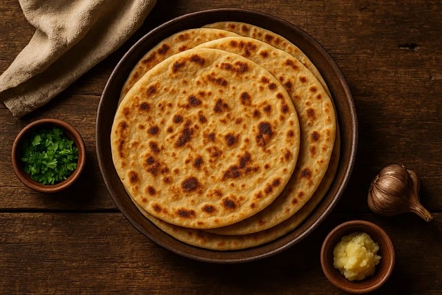

Aloo Paratha

Description
Aloo Paratha is a popular North Indian stuffed bread made with wheat flour dough and a
flavorful mashed potato filling. Cooked with ghee or butter, it is commonly served with
yogurt, pickle, or a dollop of butter and makes a hearty breakfast or meal.
Ingredients
- 2 cups wheat flour
- 3 boiled potatoes
- 1 onion, finely chopped
- 2 green chilies, chopped
- 2 tbsp coriander leaves
- 1/2 tsp cumin powder
- 1/2 tsp garam masala
- Salt to taste
- Ghee or butter for roasting
Steps
- Boil and mash the potatoes in a bowl.
- Add onions, green chilies, coriander, cumin powder, garam masala, and salt. Mix well.
- Knead wheat flour with water and salt to form a soft dough. Let it rest for 15 minutes.
- Take a dough ball and roll into a small circle.
- Place potato filling in the center and seal the edges.
- Roll gently into a round paratha.
- Cook on a hot tawa with ghee or butter until golden brown on both sides.
- Serve hot with curd, pickle, or butter.
Home